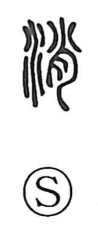

消

Kun: kieru, kesu | On: shou
to disappear ・ to go out ・ to extinguish ・ to put out ・ to run out
Explanation
消 combines 水, water, with the sound element 肖. 肖 represents a small piece of flesh connected to a bone, something fine and slight at an extremity. It supplies an association with diminishing toward a small remaining end.
With water, 消 describes the water drawing away until it disappears. From this receding and vanishing come ‘die out,’ ‘be exhausted,’ and ‘come to an end.’ The same loss can concern strength or resources, giving decline and consumption. 消滅 emphasizes disappearance, while 消耗 describes something being used up. The central movement is a gradual reduction until little or nothing remains.